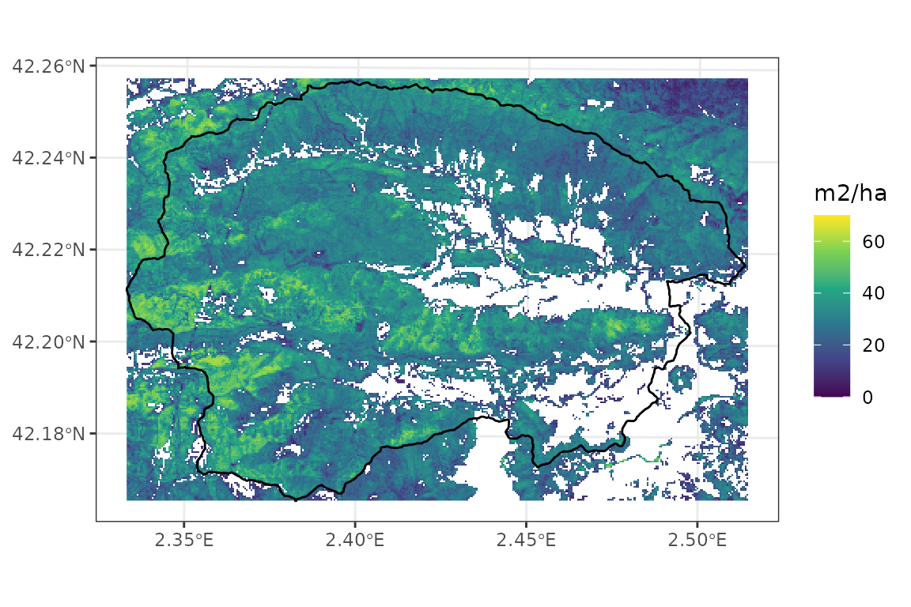

Preparing inputs
Miquel De Cáceres / Núria Aquilué
2024-05-09
PreparingInputs.RmdAim
This vignette has been created to illustrate the creation of spatial inputs to be used in model simulations with the package, starting from a set of coordinates. The functions introduced in this document are meant to be executed sequentially to progressively add spatial information, but users are free to use them in the most convenient way.
Before reading this vignette, users should be familiar with forest and soil structures in package medfate. Moreover, a brief introduction to spatial structures used in medfateland package is given in vignette Package overview and examples are given in vignettes Spatially-uncoupled simulations and Watershed simulations.
Let’s first load necessary libraries.
## Package 'medfate' [ver. 4.2.0]## Package 'medfateland' [ver. 2.3.0]Target coordinates
Any spatial data set should begin with the definition of spatial elements. Here we will use a watershed in Catalonia as example, which we will describe using cells of 200 m in EPSG:32631 (UTM for fuse 31) projection.
First we load a polygon data set describing watersheds in Spain and select our target watershed:
dataset_path <- "~/OneDrive/EMF_datasets/"
scchh <- terra::vect(paste0(dataset_path, "Hydrography/Sources/Spain/CuencasMedNorte_Pfafs/M_cuencas_rios_Med_Norte.shp"))
# Ribera Salada = 2004294
# Riera de bianya = 2005528
watershed <-terra::project(scchh[scchh$pfafrio =="2005528",], "epsg:25831")
watershed## class : SpatVector
## geometry : polygons
## dimensions : 1, 8 (geometries, attributes)
## extent : 444922.8, 459850.8, 4668354, 4678487 (xmin, xmax, ymin, ymax)
## coord. ref. : ETRS89 / UTM zone 31N (EPSG:25831)
## names : OBJECTID COD_MAR cod_uni pfafrio nom_rio_1 Cuen_Tipo
## type : <int> <chr> <int> <chr> <chr> <chr>
## values : 63564 M 1001395 2005528 RIERA DE BIANYA NA
## Shape_Leng Shape_Area
## <num> <num>
## 4.905e+04 1.024e+08Now we define a raster at 200 m resolution, including the target area. We intersect it with the watershed boundaries to keep the target locations:
r <-terra::rast(terra::ext(watershed), resolution = c(200,200), crs = "epsg:25831")
v <- terra::intersect(terra::as.points(r), watershed)And finally we transform the result into a sf
object:
x <- sf::st_as_sf(v)[,"geometry"]
x## Simple feature collection with 2550 features and 0 fields
## Geometry type: POINT
## Dimension: XY
## Bounding box: xmin: 445022.8 ymin: 4668454 xmax: 459822.8 ymax: 4678454
## Projected CRS: ETRS89 / UTM zone 31N
## First 10 features:
## geometry
## 1 POINT (450222.8 4678454)
## 2 POINT (449422.8 4678254)
## 3 POINT (449622.8 4678254)
## 4 POINT (449822.8 4678254)
## 5 POINT (450022.8 4678254)
## 6 POINT (450222.8 4678254)
## 7 POINT (450422.8 4678254)
## 8 POINT (450622.8 4678254)
## 9 POINT (450822.8 4678254)
## 10 POINT (451022.8 4678254)We will use the raster definition for plots.
Topography and land cover type
Once an object sf has been defined with target
locations, we need to determine topographic features (elevation, slope,
aspect) and land cover corresponding to those locations. You should have
access to a Digital Elevation Model (DEM) at a desired resolution. Here
we will use a DEM raster for Catalonia at 30 m resolution, which we load
using package terra:
dem <- terra::rast(paste0(dataset_path,"Topography/Products/Catalunya/MET30m_ETRS89_UTM31_ICGC.tif"))
dem## class : SpatRaster
## dimensions : 9282, 9391, 1 (nrow, ncol, nlyr)
## resolution : 30, 30 (x, y)
## extent : 258097.5, 539827.5, 4485488, 4763948 (xmin, xmax, ymin, ymax)
## coord. ref. : ETRS89 / UTM zone 31N (EPSG:25831)
## source : MET30m_ETRS89_UTM31_ICGC.tif
## name : met15v20as0f0118Bmr1r050
## min value : -7.120
## max value : 3133.625Similarly, you should have downloaded a land cover map, in this case we will use a land cover raster for Catalonia, issued in 2018:
lcm <- terra::rast(paste0(dataset_path,"LandCover/Sources/Catalunya/cobertes-sol-v1r0-2018.tif"))
lcm## class : SpatRaster
## dimensions : 259198, 267234, 1 (nrow, ncol, nlyr)
## resolution : 1, 1 (x, y)
## extent : 260170, 527404, 4488784, 4747982 (xmin, xmax, ymin, ymax)
## coord. ref. : ETRS89 / UTM zone 31N (EPSG:25831)
## source : cobertes-sol-v1r0-2018.tif
## color table : 1
## name : cobertes-sol-v1r0-2018You should examine the legend of their land cover map and decide how to map legend elements to the five land cover types used in medfateland. After inspecting our land cover map legend, we define the following vectors to perform the legend mapping:
agriculture <- 1:6
wildland <- c(7:17,20)
rock <- 18:19
artificial <- 21:35
water <- 36:41Having these inputs, we can use function
create_landscape() to add topographic and land cover
features to our starting sf:
y_1 <- create_landscape(x, dem = dem, land_cover_map = lcm,
wildland = wildland,
agriculture = agriculture,
rock = rock,
artificial = artificial,
water = water)## ℹ Checking inputs## ✔ Checking inputs [14ms]## ## ℹ Defining column 'id'## ✔ Defining column 'id' [12ms]## ## ℹ Extracting topography## |---------|---------|---------|---------|========================================= |---------|---------|---------|---------|========================================= ## ✔ Extracting topography [11.2s]## ## ℹ Extracting land cover## ✔ Extracting land cover [1s]## We can examine the result using:
y_1## Simple feature collection with 2550 features and 5 fields
## Geometry type: POINT
## Dimension: XY
## Bounding box: xmin: 445022.8 ymin: 4668454 xmax: 459822.8 ymax: 4678454
## Projected CRS: ETRS89 / UTM zone 31N
## # A tibble: 2,550 × 6
## geometry id elevation slope aspect land_cover_type
## <POINT [m]> <int> <dbl> <dbl> <dbl> <chr>
## 1 (450222.8 4678454) 1 886. 9.62 66.7 wildland
## 2 (449422.8 4678254) 2 1000. 6.86 45.2 wildland
## 3 (449622.8 4678254) 3 932. 32.8 134. wildland
## 4 (449822.8 4678254) 4 853. 20.8 164. wildland
## 5 (450022.8 4678254) 5 832. 22.6 154. wildland
## 6 (450222.8 4678254) 6 811. 29.6 137. wildland
## 7 (450422.8 4678254) 7 792. 30.7 195. wildland
## 8 (450622.8 4678254) 8 831. 21.4 146. wildland
## 9 (450822.8 4678254) 9 822. 27.6 234. wildland
## 10 (451022.8 4678254) 10 846. 28.0 185. wildland
## # ℹ 2,540 more rowsWe can now examine the elevation of the area, using the raster
r to draw cells instead of points:
## Scale for fill is already present.
## Adding another scale for fill, which will replace the existing scale.The number of cells for each land cover type is the following:
table(y_1$land_cover_type)##
## agriculture artificial wildland
## 327 71 2152Forest parameterization
The next step is to define forest objects for our
simulations. Forests should be defined for all target locations whose
land cover is defined as wildland. When forest inventory
plots are not be available for the target locations, one must resort on
imputations.
- Forest inventory data from nearby locations. National forest inventories are ideal in this respect.
- A forest map where polygons or raster cells describe the distribution of forest (or shrubland) types.
- Raster source of vegetation structure (i.e. mean tree height or basal area), derived from aerial or satellite LiDAR missions.
Our task here will be to perform imputations of forest inventory plots to our target locations according to some criteria and, if possible, to correct the forest structure on those locations according to available data.
Forest imputation
A map of forest types in the target area is important to determine
dominant tree or shrub species. We start by loading the Spanish Forest
Map (1:25000) for the region of Catalonia, which is in vector format,
using package terra:
forest_map <- terra::vect(paste0(dataset_path,"ForestMaps/Products/Catalunya/mfe25_cat_class.shp"))
forest_map## class : SpatVector
## geometry : polygons
## dimensions : 238096, 1 (geometries, attributes)
## extent : 0.1591812, 3.332506, 40.523, 42.86144 (xmin, xmax, ymin, ymax)
## source : mfe25_cat_class.shp
## coord. ref. : lon/lat ETRS89 (EPSG:4258)
## names : Class
## type : <chr>
## values : Pinus halepensis_2
## Pinus halepensis_2
## Pinus halepensis_2Second, we need forest inventory data for imputations. Arguably, this
is the hardest part. Let’s assume one has access to a such data already
in format for package medfateland (how to build such data set
will be illustrated in a different vignette). We also load an
sf_nfi object that contains coordinates and forest objects
corresponding to the Fourth
Spanish Forest Inventory for Catalonia (5509 forest plots):
nfi_path <- "/home/miquel/OneDrive/mcaceres_work/model_initialisation/medfate_initialisation/IFN/"
sf_nfi <- readRDS(paste0(nfi_path, "Products/IFN4/Catalunya/IFN4_cat_final_ETRS89H31.rds"))
sf_nfi## Simple feature collection with 5509 features and 14 fields
## Geometry type: POINT
## Dimension: XY
## Bounding box: xmin: 260943 ymin: 4491797 xmax: 518928 ymax: 4744883
## Projected CRS: ETRS89 / UTM zone 31N
## # A tibble: 5,509 × 15
## Provincia Estadillo Clase Subclase IDPARCELA IDCLASE ID id elevation
## * <chr> <chr> <chr> <chr> <chr> <chr> <chr> <chr> <dbl>
## 1 08 0001 A 1 080001 A1 080001_… 0800… 1814
## 2 08 0002 A 1 080002 A1 080002_… 0800… 1797
## 3 08 0003 A 1 080003 A1 080003_… 0800… 1657
## 4 08 0004 A 1 080004 A1 080004_… 0800… 1403
## 5 08 0005 A 1 080005 A1 080005_… 0800… 1371
## 6 08 0006 A 1 080006 A1 080006_… 0800… 1683
## 7 08 0009 A 4 080009 A4 080009_… 0800… 1041
## 8 08 0014 A 1 080014 A1 080014_… 0800… 1538
## 9 08 0016 A 4 080016 A4 080016_… 0800… 1743
## 10 08 0020 A 1 080020 A1 080020_… 0800… 1404
## # ℹ 5,499 more rows
## # ℹ 6 more variables: slope <dbl>, aspect <dbl>, soil <list>, forest <list>,
## # forest_allrecords <named list>, geom <POINT [m]>Note that this is already an sf object suitable for
simulations, but refers to the locations of the forest inventory plots,
not to our target area.
Having these two inputs (forest map and forest inventory data), we
can use function impute_forests() to perform the imputation
for us (this normally take some time):
y_2 <- impute_forests(y_1, sf_nfi = sf_nfi, dem = dem,
forest_map = forest_map)## ℹ Checking inputs## ✔ Checking inputs [5ms]## ## ℹ Calculating northing-slope## |---------|---------|---------|---------|========================================= |---------|---------|---------|---------|========================================= |---------|---------|---------|---------|========================================= |---------|---------|---------|---------|========================================= |---------|---------|---------|---------|========================================= |---------|---------|---------|---------|========================================= ## ✔ Calculating northing-slope [28.4s]## ## ℹ Calculating topography mean and sd values## ✔ Calculating topography mean and sd values [10.7s]## ## ℹ Extracting topography for 'x'## ✔ Extracting topography for 'x' [72ms]## ## ℹ Extracting topography for 'sf_nfi'## ✔ Extracting topography for 'sf_nfi' [364ms]## ## ℹ Extracting forest class for 'x'## ✔ Extracting forest class for 'x' [4.4s]## ## ℹ Extracting forest class for 'sf_nfi'## ! 9 forest classes were not represented in nfi data and the class of 113 locations was set to missing## ℹ Extracting forest class for 'sf_nfi'✔ Extracting forest class for 'sf_nfi' [3.3s]
##
## ℹ Equidistant conic coordinates
## ✔ Equidistant conic coordinates [80ms]
##
## ℹ Defining column 'forest'
## ✔ Defining column 'forest' [13ms]
##
## ℹ Imputation
## ✔ Imputation [11ms]
##
## Locations ■■■■ 9% | ETA: 20s
## Locations ■■■■■■■■ 24% | ETA: 15s
## Locations ■■■■■■■■■■■■■ 40% | ETA: 12s
## Locations ■■■■■■■■■■■■■■■■■ 55% | ETA: 9s
## Locations ■■■■■■■■■■■■■■■■■■■■■■ 68% | ETA: 6s
## Locations ■■■■■■■■■■■■■■■■■■■■■■■■■ 80% | ETA: 4s
## Locations ■■■■■■■■■■■■■■■■■■■■■■■■■■■■■ 93% | ETA: 1s
## Locations ■■■■■■■■■■■■■■■■■■■■■■■■■■■■■■■ 100% | ETA: 0s
## ! Missing forest class for 242 locations. Only geographic and topographic criteria used for those locations.
## ! Not enough plots of the same class within geographic distance limits for 21 locations. The closest plot of the same class was chosen in those cases.For each target location, the function selects forest inventory plots
that correspond to the same forest class, defined in the forest map, and
are geographically closer than a pre-specified maximum distance. Among
the multiple plots that can fulfill this criterion, the function chooses
the plot that has the most similar elevation and position in the N-to-S
slopes (i.e. the product of the cosine of aspect and slope). Warnings
and errors can arise in the process. More details can be found in the
documentation of impute_forests().
The resulting sf has an extra column named
forest:
y_2## Simple feature collection with 2550 features and 6 fields
## Geometry type: POINT
## Dimension: XY
## Bounding box: xmin: 445022.8 ymin: 4668454 xmax: 459822.8 ymax: 4678454
## Projected CRS: ETRS89 / UTM zone 31N
## # A tibble: 2,550 × 7
## geometry id elevation slope aspect land_cover_type
## * <POINT [m]> <int> <dbl> <dbl> <dbl> <chr>
## 1 (450222.8 4678454) 1 886. 9.62 66.7 wildland
## 2 (449422.8 4678254) 2 1000. 6.86 45.2 wildland
## 3 (449622.8 4678254) 3 932. 32.8 134. wildland
## 4 (449822.8 4678254) 4 853. 20.8 164. wildland
## 5 (450022.8 4678254) 5 832. 22.6 154. wildland
## 6 (450222.8 4678254) 6 811. 29.6 137. wildland
## 7 (450422.8 4678254) 7 792. 30.7 195. wildland
## 8 (450622.8 4678254) 8 831. 21.4 146. wildland
## 9 (450822.8 4678254) 9 822. 27.6 234. wildland
## 10 (451022.8 4678254) 10 846. 28.0 185. wildland
## # ℹ 2,540 more rows
## # ℹ 1 more variable: forest <list>Only wildland locations will have a forest
object, for example:
y_2$forest[[11]]## $treeData
## Species DBH Height N Z50 Z95
## 1 Quercus ilex 29.10722 1310.4731 42.44132 702.579 5020
## 2 Quercus ilex 24.81719 1152.1415 226.35370 702.579 5020
## 3 Quercus ilex 20.06446 1096.0457 318.30989 702.579 5020
## 4 Quercus ilex 15.11464 995.5473 350.14088 702.579 5020
## 5 Quercus ilex 10.31366 573.1918 381.97186 702.579 5020
## 6 Quercus ilex 5.00000 350.0000 254.64791 702.579 5020
## 7 Quercus ilex 1.50000 100.0000 2546.47909 702.579 5020
##
## $shrubData
## Species Height Cover Z50 Z95
## 2 Erica arborea 220 2 346.1416 2000
## 1 Rubus spp. 30 1 151.6395 684
##
## $herbCover
## [1] NA
##
## $herbHeight
## [1] NA
##
## attr(,"class")
## [1] "forest" "list"Forest imputation with structure correction
The former imputation result would be already useful for simulations, but the forest structure in the target locations can be very different than that of the forest inventory used as reference, even if the forest types are the same. Therefore, it is advisable to correct the forest structure with available information.
There are several global products made recently available, that combine satellite LiDAR observations with other information, such as Simard et al. (2011), Potapov et al. (2021) or Lang et al. (2023). Alternatively, airborne LiDAR products are available for some countries and regions. Here we will use structural information derived from LiDAR flights in Catalonia. First we will load a mean tree height raster at 20-m resolution:
height_map <- terra::rast(paste0(dataset_path, "RemoteSensing/Sources/Catalunya/Lidar/VariablesBiofisiques/RastersComplets/2016-2017/variables-biofisiques-arbrat-v1r0-hmitjana-2016-2017.tif"))
height_map## class : SpatRaster
## dimensions : 13100, 13400, 1 (nrow, ncol, nlyr)
## resolution : 20, 20 (x, y)
## extent : 260000, 528000, 4488000, 4750000 (xmin, xmax, ymin, ymax)
## coord. ref. : ETRS89 / UTM zone 31N (EPSG:25831)
## source : variables-biofisiques-arbrat-v1r0-hmitjana-2016-2017.tif
## name : variables-biofisiques-arbrat-v1r0-hmitjana-2016-2017This resolution is finer than the size of forest inventory plots, and the errors in the plot coordinates may lead to missing height data (the map only deals with areas with forest cover). Hence, we aggregate the raster to the 40m resolution:
height_map_40 <- terra::aggregate(height_map, fact = 2, fun = "mean", na.rm = TRUE)## |---------|---------|---------|---------|=========================================
height_map_40## class : SpatRaster
## dimensions : 6550, 6700, 1 (nrow, ncol, nlyr)
## resolution : 40, 40 (x, y)
## extent : 260000, 528000, 4488000, 4750000 (xmin, xmax, ymin, ymax)
## coord. ref. : ETRS89 / UTM zone 31N (EPSG:25831)
## source : spat_bf7b5522150f_49019.tif
## name : variables-biofisiques-arbrat-v1r0-hmitjana-2016-2017
## min value : 3.19
## max value : 25.00We call again impute_forests() to perform the imputation
while correcting tree height:
y_3 <- impute_forests(y_1, sf_nfi = sf_nfi, dem = dem,
forest_map = forest_map, height_map = height_map_40)## ℹ Checking inputs## ✔ Checking inputs [5ms]## ## ℹ Calculating northing-slope## |---------|---------|---------|---------|========================================= |---------|---------|---------|---------|========================================= |---------|---------|---------|---------|========================================= |---------|---------|---------|---------|========================================= |---------|---------|---------|---------|========================================= |---------|---------|---------|---------|========================================= ## ✔ Calculating northing-slope [30.3s]## ## ℹ Calculating topography mean and sd values## ✔ Calculating topography mean and sd values [10.4s]## ## ℹ Extracting topography for 'x'## ✔ Extracting topography for 'x' [75ms]## ## ℹ Extracting topography for 'sf_nfi'## ✔ Extracting topography for 'sf_nfi' [402ms]## ## ℹ Extracting forest class for 'x'## ✔ Extracting forest class for 'x' [4.8s]## ## ℹ Extracting forest class for 'sf_nfi'## ! 9 forest classes were not represented in nfi data and the class of 113 locations was set to missing## ℹ Extracting forest class for 'sf_nfi'✔ Extracting forest class for 'sf_nfi' [3s]
##
## ℹ Extracting height for 'x'
## ✔ Extracting height for 'x' [57ms]
##
## ℹ Extracting height for 'sf_nfi'
## ✔ Extracting height for 'sf_nfi' [303ms]
##
## ℹ Equidistant conic coordinates
## ✔ Equidistant conic coordinates [51ms]
##
## ℹ Defining column 'forest'
## ✔ Defining column 'forest' [10ms]
##
## ℹ Imputation
## ✔ Imputation [9ms]
##
## Locations ■■■■■■ 16% | ETA: 15s
## Locations ■■■■■■■■■■ 32% | ETA: 13s
## Locations ■■■■■■■■■■■■■■■ 46% | ETA: 10s
## Locations ■■■■■■■■■■■■■■■■■■■■ 64% | ETA: 7s
## Locations ■■■■■■■■■■■■■■■■■■■■■■■■ 77% | ETA: 4s
## Locations ■■■■■■■■■■■■■■■■■■■■■■■■■■■■■ 92% | ETA: 1s
## Locations ■■■■■■■■■■■■■■■■■■■■■■■■■■■■■■■ 100% | ETA: 0s
## ! Missing forest class for 242 locations. Only geographic and topographic criteria used for those locations.
## ! Not enough plots of the same class within geographic distance limits for 21 locations. The closest plot of the same class was chosen in those cases.The function does not force average tree height of the stand in the target location to match the height map. Rather, it uses the ratio of heights between the target location and the forest inventory plot used as imputation source, to correct the tree heights of the target location. Tree diameters are corrected with the same factor, assuming that the diameter-height relationship does not depend on tree height. This leads consequently in a change in basal area (see below). We can inspect the same forest as above to see the effect of the correction:
y_3$forest[[11]]## $treeData
## Species DBH Height N Z50 Z95
## 1 Quercus ilex 28.054607 1112.83273 14.14711 702.579 5020
## 2 Quercus ilex 24.255659 1127.48457 183.91238 702.579 5020
## 3 Quercus ilex 20.102584 1032.85729 293.55245 702.579 5020
## 4 Quercus ilex 15.209583 949.50662 381.97186 702.579 5020
## 5 Quercus ilex 10.002225 630.54852 445.63384 702.579 5020
## 6 Quercus ilex 4.675768 327.30374 254.64791 702.579 5020
## 7 Quercus ilex 1.402730 93.51536 2546.47909 702.579 5020
##
## $shrubData
## Species Height Cover Z50 Z95
## 2 Erica arborea 220 2 346.1416 2000
## 1 Rubus spp. 30 1 151.6395 684
##
## $herbCover
## [1] NA
##
## $herbHeight
## [1] NA
##
## attr(,"class")
## [1] "forest" "list"Additionally, one may have access to other maps of structural variables. In our case, we will use a raster of tree density, also derived from LiDAR flights:
density_map <- terra::rast(paste0(dataset_path, "RemoteSensing/Sources/Catalunya/Lidar/VariablesBiofisiques/RastersComplets/2016-2017/variables-biofisiques-arbrat-v1r0-den-2016-2017.tif"))
density_map## class : SpatRaster
## dimensions : 13100, 13400, 1 (nrow, ncol, nlyr)
## resolution : 20, 20 (x, y)
## extent : 260000, 528000, 4488000, 4750000 (xmin, xmax, ymin, ymax)
## coord. ref. : ETRS89 / UTM zone 31N (EPSG:25831)
## source : variables-biofisiques-arbrat-v1r0-den-2016-2017.tif
## name : variables-biofisiques-arbrat-v1r0-den-2016-2017We perform the same aggregation done for heights:
density_map_40 <- terra::aggregate(density_map, fact = 2, fun = "mean", na.rm = TRUE)## |---------|---------|---------|---------|========================================= Finally, we call again function impute_forests() with
both height and basal area maps:
y_4 <- impute_forests(y_1, sf_nfi = sf_nfi, dem = dem,
forest_map = forest_map, height_map = height_map_40, density_map = density_map_40)## ℹ Checking inputs## ✔ Checking inputs [4ms]## ## ℹ Calculating northing-slope## |---------|---------|---------|---------|========================================= |---------|---------|---------|---------|========================================= |---------|---------|---------|---------|========================================= |---------|---------|---------|---------|========================================= |---------|---------|---------|---------|========================================= |---------|---------|---------|---------|========================================= ## ✔ Calculating northing-slope [27s]## ## ℹ Calculating topography mean and sd values## ✔ Calculating topography mean and sd values [9.7s]## ## ℹ Extracting topography for 'x'## ✔ Extracting topography for 'x' [95ms]## ## ℹ Extracting topography for 'sf_nfi'## ✔ Extracting topography for 'sf_nfi' [472ms]## ## ℹ Extracting forest class for 'x'## ✔ Extracting forest class for 'x' [5.4s]## ## ℹ Extracting forest class for 'sf_nfi'## ! 9 forest classes were not represented in nfi data and the class of 113 locations was set to missing## ℹ Extracting forest class for 'sf_nfi'✔ Extracting forest class for 'sf_nfi' [3.4s]
##
## ℹ Extracting height for 'x'
## ✔ Extracting height for 'x' [91ms]
##
## ℹ Extracting height for 'sf_nfi'
## ✔ Extracting height for 'sf_nfi' [380ms]
##
## ℹ Extracting density for 'x'
## ✔ Extracting density for 'x' [79ms]
##
## ℹ Extracting density for 'sf_nfi'
## ✔ Extracting density for 'sf_nfi' [303ms]
##
## ℹ Equidistant conic coordinates
## ✔ Equidistant conic coordinates [74ms]
##
## ℹ Defining column 'forest'
## ✔ Defining column 'forest' [13ms]
##
## ℹ Imputation
## ✔ Imputation [13ms]
##
## Locations ■■■■ 12% | ETA: 22s
## Locations ■■■■■■■■ 22% | ETA: 21s
## Locations ■■■■■■■■■■■ 34% | ETA: 17s
## Locations ■■■■■■■■■■■■■■■■ 48% | ETA: 13s
## Locations ■■■■■■■■■■■■■■■■■■■■■ 66% | ETA: 8s
## Locations ■■■■■■■■■■■■■■■■■■■■■■■■■ 79% | ETA: 5s
## Locations ■■■■■■■■■■■■■■■■■■■■■■■■■■■■■ 94% | ETA: 1s
## Locations ■■■■■■■■■■■■■■■■■■■■■■■■■■■■■■■ 100% | ETA: 0s
## ! Missing forest class for 242 locations. Only geographic and topographic criteria used for those locations.
## ! Not enough plots of the same class within geographic distance limits for 21 locations. The closest plot of the same class was chosen in those cases.Analogously to the correction of heights, the correction for tree
density does not take the tree density value of the map for the target
location, but the ratio of values between the target location and the
forest inventory plot used as reference for imputation. We can inspect
the same forest again to see the changes in N (density per
hectare) column:
y_4$forest[[11]]## $treeData
## Species DBH Height N Z50 Z95
## 1 Quercus ilex 28.054607 1112.83273 14.37114 702.579 5020
## 2 Quercus ilex 24.255659 1127.48457 186.82485 702.579 5020
## 3 Quercus ilex 20.102584 1032.85729 298.20120 702.579 5020
## 4 Quercus ilex 15.209583 949.50662 388.02083 702.579 5020
## 5 Quercus ilex 10.002225 630.54852 452.69097 702.579 5020
## 6 Quercus ilex 4.675768 327.30374 258.68055 702.579 5020
## 7 Quercus ilex 1.402730 93.51536 2586.80555 702.579 5020
##
## $shrubData
## Species Height Cover Z50 Z95
## 2 Erica arborea 220 2 346.1416 2000
## 1 Rubus spp. 30 1 151.6395 684
##
## $herbCover
## [1] NA
##
## $herbHeight
## [1] NA
##
## attr(,"class")
## [1] "forest" "list"We can compare the effect of the two corrections (height only or height + basal area) on forest metrics, such as the dominant tree height:
medfate::stand_dominantTreeHeight(y_2$forest[[11]])## [1] 1177.141
medfate::stand_dominantTreeHeight(y_3$forest[[11]])## [1] 1127.485
medfate::stand_dominantTreeHeight(y_4$forest[[11]])## [1] 1127.485or stand basal area:
medfate::stand_basalArea(y_2$forest[[11]])## [1] 33.31147
medfate::stand_basalArea(y_3$forest[[11]])## [1] 29.13129
medfate::stand_basalArea(y_4$forest[[11]])## [1] 29.59261where it is apparent that both the height correction and the basal area correction have an effect in basal area.
## Scale for fill is already present.
## Adding another scale for fill, which will replace the existing scale.
## Scale for fill is already present.
## Adding another scale for fill, which will replace the existing scale.
## Scale for fill is already present.
## Adding another scale for fill, which will replace the existing scale.
Soil parameterization
Soil information is most usually lacking for the target locations. Regional maps of soil properties may be available in some cases. Here we assume this information is not available, so that we resort to global products. In particular, we will use information provided in SoilGrids at 250 m resolution.
SoilGrids 2.0 data
Function add_soilgrids() can perform queries using the
REST API of SoilGrids, but this becomes problematic for multiple sites.
Hence, we recommend downloading SoilGrid rasters for the target region
and storing them in a particular format, so that function
add_soilgrids() can read them (check the details of the
function documentation). The extraction of SoilGrids data for our target
cells is rather fast using this approach:
soilgrids_path = paste0(dataset_path,"Soils/Sources/Global/SoilGrids/Spain/")
y_5 <- add_soilgrids(y_4, soilgrids_path = soilgrids_path, verbose = TRUE)## ℹ Defining column 'soil'## ✔ Defining column 'soil' [5ms]## ## ℹ Extracting 2479 points from SoilGrids raster layers:## ✔ Extracting 2479 points from SoilGrids raster layers: [2.8s]## ## ℹ Checking for missing values in key parameters## ! Default 'clay' values assigned for 27 locations## ℹ Checking for missing values in key parameters! Default 'sand' values assigned for 27 locations
## ℹ Checking for missing values in key parameters! Default 'bd' values assigned for 27 locations
## ℹ Checking for missing values in key parameters! Default 'rfc' values assigned for 27 locations
## ℹ Checking for missing values in key parameters✔ Checking for missing values in key parameters [2.1s]And the result has an extra column soil:
y_5## Simple feature collection with 2550 features and 7 fields
## Geometry type: POINT
## Dimension: XY
## Bounding box: xmin: 445022.8 ymin: 4668454 xmax: 459822.8 ymax: 4678454
## Projected CRS: ETRS89 / UTM zone 31N
## # A tibble: 2,550 × 8
## geometry id elevation slope aspect land_cover_type
## <POINT [m]> <int> <dbl> <dbl> <dbl> <chr>
## 1 (450222.8 4678454) 1 886. 9.62 66.7 wildland
## 2 (449422.8 4678254) 2 1000. 6.86 45.2 wildland
## 3 (449622.8 4678254) 3 932. 32.8 134. wildland
## 4 (449822.8 4678254) 4 853. 20.8 164. wildland
## 5 (450022.8 4678254) 5 832. 22.6 154. wildland
## 6 (450222.8 4678254) 6 811. 29.6 137. wildland
## 7 (450422.8 4678254) 7 792. 30.7 195. wildland
## 8 (450622.8 4678254) 8 831. 21.4 146. wildland
## 9 (450822.8 4678254) 9 822. 27.6 234. wildland
## 10 (451022.8 4678254) 10 846. 28.0 185. wildland
## # ℹ 2,540 more rows
## # ℹ 2 more variables: forest <list>, soil <list>The elements of the list are the usual data frames of soil properties in medfate:
y_5$soil[[1]]## widths clay sand om bd rfc nitrogen
## 1 50 21.9 38.7 8.79 1.12 18.0 5.18
## 2 100 21.7 39.2 3.79 1.13 21.8 2.51
## 3 150 23.4 38.0 2.52 1.25 19.7 1.92
## 4 300 25.6 37.6 1.77 1.43 19.0 1.16
## 5 400 26.0 39.2 1.37 1.52 20.7 1.05
## 6 1000 25.7 38.0 0.86 1.54 21.7 0.95Correction for soil depth
SoilGrids 2.0 does not provide information on soil depth, and rock
fragment content is normally underestimated, which leads to an
overestimation of water holding capacity. Function
modify_soils() allows modifying soil definitions, if
information is available for soil depth, depth to the (unaltered)
bedrock, or both. Soil depth maps are not common in many regions, so
here we will resort on a global product at 250m-resolution by Shangguan et al. (2017),
which consists on three rasters:
# Censored soil depth (cm)
bdricm <- terra::rast(paste0(dataset_path, "Soils/Sources/Global/SoilDepth_Shangguan2017/BDRICM_M_250m_ll.tif"))
# Probability of bedrock within first 2m [0-100]
bdrlog <- terra::rast(paste0(dataset_path, "Soils/Sources/Global/SoilDepth_Shangguan2017/BDRLOG_M_250m_ll.tif"))
# Absolute depth to bedrock (cm)
bdticm <- terra::rast(paste0(dataset_path, "Soils/Sources/Global/SoilDepth_Shangguan2017/BDTICM_M_250m_ll.tif"))In order to accelerate raster manipulations, we crop the global rasters to the extent of the target area:
x_vect <- terra::vect(sf::st_transform(sf::st_geometry(x), terra::crs(bdricm)))
x_ext <- terra::ext(x_vect)
bdricm <- terra::crop(bdricm, x_ext, snap = "out")
bdrlog <- terra::crop(bdrlog, x_ext, snap = "out")
bdticm <- terra::crop(bdticm, x_ext, snap = "out")Censored soil depth is a poor product of actual soil depth, but we have observed a fairly good correlation between soil depth values in Catalonia and the probability of finding the bedrock within the first two meters. Hence, we multiply the two layers and use it as a (crude) estimate of soil depth, expressing it in mm:
soil_depth_mm <- (bdricm$BDRICM_M_250m_ll*10)*(1 - (bdrlog$BDRLOG_M_250m_ll/100))and we take the depth to bedrock as appropriate, but change its units to mm as well:
depth_to_bedrock_mm <- bdticm*10We can now call function modify_soils() with the two
rasters to perform the correction of soil characteristics:
y_6 <- modify_soils(y_5,
soil_depth_map = soil_depth_mm,
depth_to_bedrock_map = depth_to_bedrock_mm)## ℹ Checking inputs## ✔ Checking inputs [5ms]## ## ℹ Extracting soil depth## ✔ Extracting soil depth [43ms]## ## ℹ Extracting depth to bedrock## ✔ Extracting depth to bedrock [55ms]## ## ℹ Modifying soil depths## ✔ Modifying soil depths [2.5s]## In this case, the depth to bedrock values were deeper than 2m, so that only the soil depth map had an effect on the correction procedure. After the correction, the rock fragment content of the soil has changed substantially:
y_6$soil[[1]]## widths clay sand om bd rfc nitrogen
## 1 50 21.9 38.7 8.79 1.12 18.00000 5.18
## 2 100 21.7 39.2 3.79 1.13 21.80000 2.51
## 3 150 23.4 38.0 2.52 1.25 19.70000 1.92
## 4 300 25.6 37.6 1.77 1.43 30.89789 1.16
## 5 400 26.0 39.2 1.37 1.52 54.92958 1.05
## 6 1000 25.7 38.0 0.86 1.54 97.50000 0.95We can compare the effect of the correction on the soil water capacity (in mm) by inspecting the following plots (note the change in magnitude and spatial pattern):

Initialization test
We can check whether the input data set is well formed by calling
function initialize_landscape():
z <- initialize_landscape(y_6, SpParamsMED, defaultControl())## ℹ Creating 2479 input objects for model 'spwb'.## ✔ Creating 2479 input objects for model 'spwb'. [5ms]## ## Stands ■■ 3% | ETA: 37s## Stands ■■■ 8% | ETA: 38s## Stands ■■■■■■ 15% | ETA: 36s## Stands ■■■■■■■■ 22% | ETA: 32s## Stands ■■■■■■■■■■ 29% | ETA: 30s## Stands ■■■■■■■■■■■■ 37% | ETA: 26s## Stands ■■■■■■■■■■■■■■ 44% | ETA: 23s## Stands ■■■■■■■■■■■■■■■■■ 52% | ETA: 20s## Stands ■■■■■■■■■■■■■■■■■■■■ 62% | ETA: 15s## Stands ■■■■■■■■■■■■■■■■■■■■■ 68% | ETA: 13s## Stands ■■■■■■■■■■■■■■■■■■■■■■■ 75% | ETA: 10s## Stands ■■■■■■■■■■■■■■■■■■■■■■■■■■ 82% | ETA: 7s## Stands ■■■■■■■■■■■■■■■■■■■■■■■■■■■■ 89% | ETA: 5s## Stands ■■■■■■■■■■■■■■■■■■■■■■■■■■■■■■ 95% | ETA: 2s## Stands ■■■■■■■■■■■■■■■■■■■■■■■■■■■■■■ 97% | ETA: 1sOther variables may be needed, depending on the simulation function we want to use, but here we illustrated the basic ones.